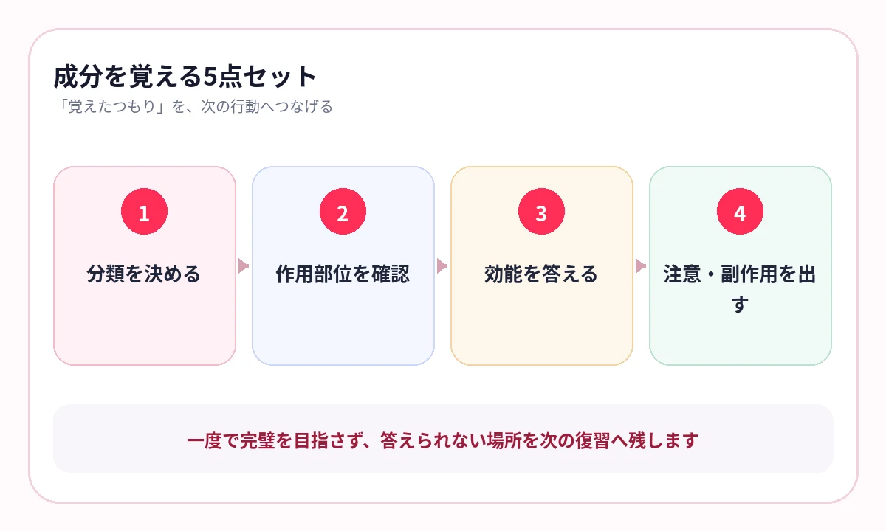

成分名は見覚えがあるのに、どこに作用し、誰が注意すべきかで迷っていませんか？
登録販売者試験では、医薬品の基本、人体の働き、主な医薬品と作用、法規・制度、安全対策などを幅広く学びます。
成分名だけの暗記では、似た成分や注意事項が混ざります。作用する場所、目的、使用を避ける人、副作用を一組にして覚えます。
公式手引きの章立てを、学習の地図にする
厚生労働省は、登録販売者試験問題の作成に関する手引きを公開しています。医薬品の基本、人体、主な医薬品と作用、法規・制度、適正使用・安全対策などを体系的に扱います。
人体と医薬品
器官の働き、薬がたどる過程、主な副作用を図で確認します。
成分と作用
成分名、作用部位、効能、注意対象を組にします。
法規・安全
販売区分、情報提供、表示、救済制度、安全対策を整理します。
成分名は、5点セットで答える
- どの分類・薬効群か
- どこに作用するか
- どんな症状に使うか
- 誰が使用を避ける・相談するか
- 主な副作用・相互作用は何か
成分名を見て効能を一つ言うだけでなく、注意対象まで続けて答えます。

人体の図に戻ると、作用がつながる
消化器、呼吸器、循環器、感覚器、神経など、成分が作用する場所を人体の図で確認します。
作用部位が分かると、効能と副作用を別々の丸暗記にせず、同じ仕組みとして理解しやすくなります。
- どの器官・受容体に関係するか
- 症状をどう変える作用か
- 同じ作用が強すぎると何が起きるか
- 他の成分と作用が重ならないか
図の名称や作用をマスクし、位置関係を残したまま答えます。
横にスワイプして画像を確認できます


{kind=link}
{kind=link}
似た成分は、薬効群ごとに横へ並べる
| 比較軸 | 確認する内容 |
|---|---|
| 主な作用 | 鎮痛、鎮咳、抗ヒスタミン、制酸など |
| 注意対象 | 年齢、妊娠・授乳、持病、併用薬 |
| 主な副作用 | 眠気、口渇、胃腸症状など |
| 重複注意 | 同じ成分・同じ作用が含まれる製品 |
成分ごとの縦暗記ができたら、同じ薬効群の違いを横に比較します。
実例：第一類・第二類・第三類は「誰が売るか」と「どう説明するか」で分ける
リスク区分の名称だけを覚えると、販売できる専門家と情報提供のルールが混ざります。店頭で誰が何をするかまで一つの場面にします。
| 区分 | 販売できる専門家 | 購入時の情報提供 | 覚える焦点 |
|---|---|---|---|
| 第一類医薬品 | 薬剤師 | 薬剤師による情報提供が必要 | 特に注意が必要なリスクと薬剤師対応 |
| 第二類医薬品 | 薬剤師・登録販売者 | 情報提供に努める | 登録販売者が扱えるが、注意喚起が重要 |
| 第三類医薬品 | 薬剤師・登録販売者 | 購入時の積極的な情報提供義務なし | 相談があれば専門家が応答する |
「登録販売者が販売できるか」だけなら第二類・第三類です。そこから情報提供の扱いを比べると、第一類との違いも一度に確認できます。
分類名、販売者、情報提供を3枚に分けず、一つの表で答えると制度問題に強くなります。
受験年度の手引きへ更新する
登録販売者試験の手引きは改訂されます。受験年度の最新版を確認し、古い注意事項や制度を混ぜないようにします。
AI暗記シートでは、手引きや教材PDFのページを取り込み、成分・人体・法規などで保存できます。出題後の弱点を残し、似た成分を優先して反復します。
- 第3章｜かぜ薬｜成分比較｜2026手引き
- 第2章｜消化器｜人体図
- 第4章｜販売区分｜情報提供
- 第5章｜副作用救済制度｜要復習
よくある質問
成分名だけを単語カードで覚えてもよいですか？
入口としては使えますが、作用部位、効能、注意対象、副作用まで一組で答えると、選択肢を判断しやすくなります。
人体の図は暗記に必要ですか？
器官の働きと薬の作用をつなぐために有効です。図の位置関係を残して名称や働きを確認します。
古い手引きで勉強してもよいですか？
受験年度の最新版を優先してください。改訂箇所があるため、古い教材を使う場合は必ず最新手引きと照合します。
第一類・第二類・第三類医薬品はどう見分けますか？
第一類は薬剤師のみが販売し情報提供が必要です。第二類・第三類は薬剤師または登録販売者が販売でき、第二類は情報提供が努力義務、第三類は購入時の積極的な情報提供義務がありません。
参考情報
試験範囲・制度は公式情報、復習方法は学習科学の研究を参照しています。
成分名を、接客で使える知識へ
作用部位・注意対象・副作用まで反復
手引きや教材PDFの重要語句を隠し、成分・人体・法規で保存。似た成分と弱点を優先して確認できます。
iPhone・iPad対応／3枚まで無料保存／継続利用は800円の買い切り